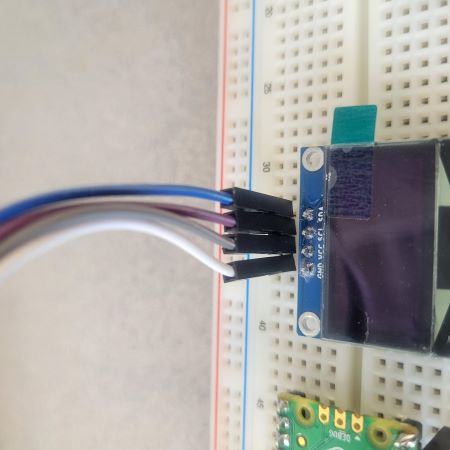
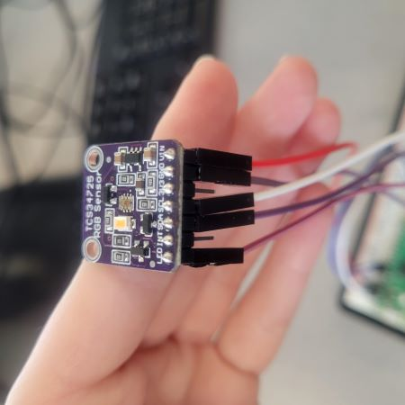
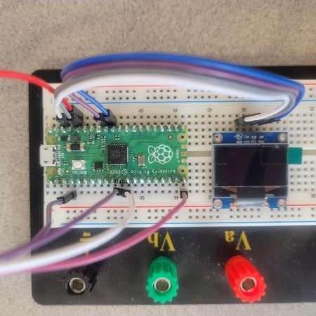

Week 5: Detect the Color of M&Ms
Contents
Week 5: Detect the Color of M&Ms#
Laboratory 4
Last updated July 07, 2022
00. Content #
Mathematics
3 dimensional vectors
Distance
Programming Skills
Modules
Embedded Systems
Thonny and MicroPython
0. Required Hardware #
Raspberry Pi Pico
RGB color sensor (TCS3472)
OLED display
Write your name and email below:
Name: me
Email: me @purdue.edu
RGB Color Sensors#
We’ve done a lot of theoretical work about color from learning about tristiulus vectors and metamers, but now let’s investigate a use for the RGB color space. The TCS3472 sensor we will be using can detect color and returns an RGB value. The sensor contains an infrared (IR) blocking filter for increased accuracy. IR light is light that has wavelengths of 800-1000 nm; it is invisible to us since humans only percieve wavelengths in the 400-700 nm range. If you want to learn more about this sensor, download TCS34725.pdf.
Wiring Instructions#
Please make sure your microcontroller is not plugged to the computer while you are wiring things together. Ask the instructor if you are unsure about your wiring.
OLED |
Pico |
|---|---|
GND |
GND |
VCC |
3V3(OUT) |
SCL |
I2C0 SCL or I2C1 SCL |
SDA |
I2C0 SDA or I2C1 SDA |
TCS34725 |
Pico |
|---|---|
GND |
GND |
VIN |
3V3(OUT) |
SDA |
GP8 |
SCL |
GP9 |
LED |
GP15 |
  
Exercise 1 #
It’s long been debated whether different color M&Ms taste different [1]. Let’s say you have a friend who is color blind who wants to test this theory themselves, but it’s a challenge to sort red from green from brown M&Ms. To solve this critial problem, your goal is to create an M&M sorter using your Pico and the TCS3472 color sensor. Connect the color sensor and an OLED display to your Pico. When you hold up an M&M to the sensor, the screen should display the name of the color of the M&M. To display the name of the color, you will have to play around with the color detection a bit to see what values generally are detected for each color. As a suggestion, it’ll be easier to read and manipulate your code if you write the color name display code in a function aside from main.
Hint 1: See example.py for how to use the sensor. Make sure tcs34725.py is stored on the Pico before you run the example file.
Hint 2: It may be helpful to use the distance between the RGB vector output and “target” colors to detect red, blue, etc.
Part 1
Describe in a few sentences how well your M&M sorter works.
Write Answers for Exercise 1 Part 1 Below
Part 2
Display all code you wrote either by copying and pasting or reading in and printing Python file contents.
Write Answers for Exercise 1 Part 2 Below
Exercise 2 #
While displaying the color name helps, it may be easier to understand what the color sensor is seeing if we showed the actual color. This time using the Thonny terminal instead of the OLED, print a block of color based on the values that the color sensor is picking up. You may also want to change the time between each print to be a bit longer if the terminal gets too cluttered too quickly.
Hint: You learned how to print blocks of colors in Lab 1 so referencing that lab may be beneficial.
Part 1
Describe in a couple sentences how well your code works.
Write Answers for Exercise 2 Part 1 Below
Part 2
Display all code you wrote either by copying and pasting or reading in and printing Python file contents.
Write Answers for Exercise 2 Part 2 Below
Reflection #
1. What parts of the lab, if any, do you feel you did well?
2. What are some things you learned today?
3. Are there any topics that could use more clarification?
4. Do you have any suggestions on parts of the lab to improve?